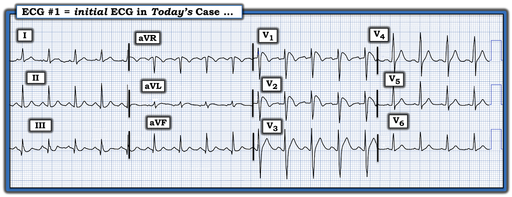
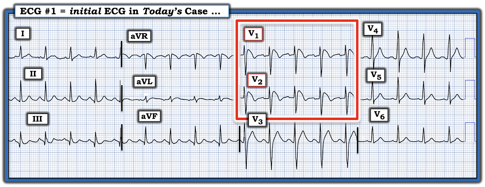
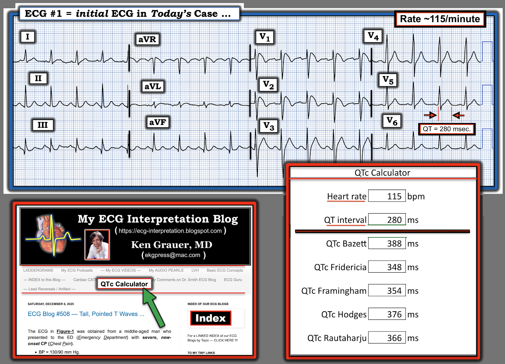
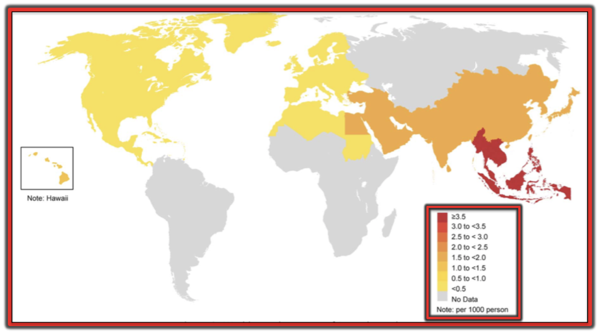

ECG Blog #509 — Máy tính báo "Nhồi máu cơ tim cấp"
Một người đàn ông 35 tuổi bị ngừng tim có người chứng kiến tại một khách sạn.
- Đội cấp cứu ngoài viện (EMS) đã được gọi — và người xung quanh đã kịp thời bắt đầu hồi sinh tim phổi (CPR).
- Rung thất (VFib — Ventricular Fibrillation) được ghi nhận khi đội nhân viên cấp cứu ngoài viện đến nơi. Đã tiến hành sốc điện một chiều (DC) — với ROSC (tái lập tuần hoàn tự nhiên — Return Of Spontaneous Circulation) và bệnh nhân tỉnh táo hoàn toàn trở lại.
- Điện tâm đồ ở Hình 1 được ghi sau ROSC.
CÂU HỎI:
- Bạn sẽ diễn giải điện tâm đồ ở Hình 1 như thế nào?
- Có nên kích hoạt phòng thông tim (cath lab) không?


SUY NGHĨ CỦA TÔI về CA BỆNH hôm nay:
"Tin tốt" về ca hôm nay — là người đàn ông 35 tuổi trước đó khỏe mạnh này bị ngừng tim có người chứng kiến tại một nơi mà người xung quanh đã bắt đầu CPR ngay lập tức — và việc khử rung kịp thời của lực lượng cấp cứu đã giúp khôi phục nhịp bình thường, bệnh nhân hồi phục hoàn toàn với tình trạng thần kinh nguyên vẹn.
- Điện tâm đồ sau ROSC ở Hình 1 cho thấy nhịp nhanh xoang 115 lần/phút với phức bộ QRS hẹp.
- "Mắt" tôi lập tức bị hút về các chuyển đạo V1,V2 (trong khung chữ nhật MÀU ĐỎ ở Hình 2). ST chênh lên rõ ở các chuyển đạo này, với đoạn ST dốc xuống rồi nối vào sóng T đảo ngược ở phần cuối — là hình ảnh chẩn đoán hình ảnh Brugada típ 1 trên điện tâm đồ (Xem Hình 3 bên dưới).
- Đoạn ST thẳng đuỗn, với mức ST chênh lên khá hạn chế, được thấy ở chuyển đạo V3 kế bên (khó xác định điểm J ở chuyển đạo này để đánh giá mức ST chênh lên).
- Phần còn lại của điện tâm đồ này không đặc hiệu, và bất ngờ là không có gì đáng chú ý. Có các sóng q nhỏ, hẹp (và có lẽ không có ý nghĩa) ở các chuyển đạo thành dưới. Có ST dạng vòm (coving) ở chuyển đạo aVL — và điểm J chênh xuống tối thiểu với đoạn ST dốc lên ở các chuyển đạo V5,V6.
Nhận định về điện tâm đồ #1:
- Nhịp nhanh xoang.
- Hình ảnh Brugada típ 1 trên điện tâm đồ ở các chuyển đạo thành trước. (Tôi nghi rằng đoạn ST thẳng đuỗn kèm ST chênh lên nhẹ ở chuyển đạo V3 kế bên phản ánh sự tiếp nối của hình ảnh Brugada típ 1).
- Đây không phải là điện tâm đồ của nhồi máu cấp! (Ngoài các chuyển đạo V1,V2 khớp hoàn hảo với hình ảnh Brugada típ 1 minh họa ở Hình 3 — các chuyển đạo khác đều không đặc hiệu và không có giá trị chẩn đoán nhồi máu cơ tim cấp).
- Đây không phải là điện tâm đồ của RBBB! (Không chỉ vì QRS không đủ rộng — mà còn vì thiếu các sóng S tận rộng ở các chuyển đạo bên — và đặc biệt vì hình thái QRS ở các chuyển đạo V1,V2 quá điển hình cho hình ảnh Brugada típ 1 minh họa ở Hình 3).
- Vì bệnh nhân hôm nay hiện đã tỉnh táo hoàn toàn (và không có tiền sử đau ngực) — không có chỉ định kích hoạt phòng thông tim ngay lập tức. Thay vào đó, kế hoạch xử trí cho bệnh nhân hiện đang hoàn toàn ổn định này — nên bao gồm khảo sát đầy đủ các yếu tố có thể đã thúc đẩy cơn ngừng tim (bao gồm xét nghiệm di truyền và đánh giá tiền sử gia đình).
- Điều cốt lõi: Do đã xảy ra ngừng tim kết hợp với hình ảnh Brugada típ 1 trên điện tâm đồ — gần như chắc chắn sẽ có khuyến cáo đặt ICD (máy khử rung tim cấy được — Implantable Cardioverter-Defibrillator) .
Diễn Tiến của CA BỆNH hôm nay:
- Hóa ra bệnh nhân hôm nay là người gốc Đông Nam Á . Như đã nêu trong PHẦN BỔ SUNG bên dưới (Xem Hình 6) — khu vực địa lý này của thế giới có tỷ lệ hiện mắc hội chứng Brugada cao nhất, vượt xa các nơi khác.
- Các thăm dò ở bệnh nhân hôm nay đều âm tính (bao gồm chụp CT mạch vành bình thường và MRI tim bình thường).
- Bệnh nhân đã được cấy ICD — và xuất viện trong tình trạng rất tốt.



(B) Hình ảnh Brugada típ 2 trên điện tâm đồ ( = hình ảnh “yên ngựa” (Saddleback)) — cho thấy ST chênh lên dạng lõm (concave-up) ≥0.5 mm (thường ≥2 mm) ở ≥1 chuyển đạo trước tim phải, tiếp theo là sóng T dương.
(C) Các tiêu chuẩn bổ sung để chẩn đoán hình ảnh Brugada típ 2 trên điện tâm đồ (TRÊN: Góc ß; DƯỚI: Có hình ảnh Brugada típ 2 nếu ở vị trí 5 mm bên dưới điểm cao nhất của sóng R’ — đáy của tam giác tạo thành ≥4 mm — vì điều này bảo đảm góc ß ≥58°).
= = = = = = = = = = = =
LƯU Ý #1: Theo truyền thống, có 3 hình ảnh Brugada trên điện tâm đồ đã được mô tả. Các tiêu chuẩn mới hơn đôi khi "gộp" típ 2 và típ 3 thành một nhóm phân loại "yên ngựa" duy nhất cho đơn giản (đây là cách phân loại tôi ưa dùng — và là cách tôi trình bày trong Hình này). Hình thái ST-T trông tương tự nhau ở hình ảnh típ 2 và típ 3 — nhưng Brugada típ 3 biểu hiện ST chênh lên ít hơn típ 2 ( = điểm J chênh lên dưới 2 mm — và ST chênh lên dưới 1 mm).
Điểm MẤU CHỐT: Hình ảnh Brugada típ 2 (yên ngựa) có thể gợi ý — nhưng tự nó thì không có giá trị chẩn đoán hội chứng Brugada.
= = = = = = = = = = = =
LƯU Ý #2: Hình ảnh Brugada típ 1 có thể được quan sát thấy một cách tự phát (với các chuyển đạo V1, V2 đặt ở vị trí bình thường — hoặc — đặt cao hơn 1 hoặc 2 khoang liên sườn so với thường lệ) — hoặc — hình ảnh Brugada típ 1 có thể được quan sát thấy như một đáp ứng với nghiệm pháp dùng thuốc kích thích (tức là sau khi tiêm tĩnh mạch một thuốc chẹn kênh natri như ajmaline, flecainide hoặc procainamide).
= = = = = = = = = = = =
LƯU Ý #3: Trước đây, chẩn đoán hội chứng Brugada đòi hỏi không chỉ có hình ảnh Brugada típ 1 trên điện tâm đồ — mà còn phải có tiền sử đột tử, VT bền bỉ, ngất không do phản xạ phế vị (non-vasovagal) hoặc tiền sử gia đình có người đột tử khi còn trẻ. Định nghĩa này đã được thay đổi sau một hội đồng đồng thuận chuyên gia năm 2013 — đến mức hiện nay điều duy nhất cần có để chẩn đoán hội chứng Brugada là hình ảnh Brugada típ 1 trên điện tâm đồ tự phát hoặc gây ra bằng thuốc (không cần thêm tiêu chuẩn nào khác miễn là không có nguyên nhân có thể đảo ngược gây ra hình ảnh Brugada típ 1, như trường hợp kiểu hình sao chép (Phenocopy) [mà chúng tôi sẽ mô tả ở phần dưới một chút]).
================================
Còn khoảng QT thì sao?
Hãy NHÌN lại khoảng QT ở Hình 2.
- QTc có ngắn quá không?
TRẢ LỜI: QTc có ngắn quá không?
Trong số các căn nguyên có thể thúc đẩy ngừng tim ở một người đàn ông trước đó khỏe mạnh — có hội chứng QT ngắn (SQTS).
- Như đã bàn trong bài tổng quan của Rudic và cs. (Arrhythm Electrophysiol Rev 3(2):76-79, 2014) — SQTS là một bệnh kênh ion tim di truyền, được xác định dựa trên sự hiện diện của triệu chứng (ngất, ngừng tim), tiền sử gia đình dương tính, và dấu hiệu khoảng QTc ngắn bất thường trên điện tâm đồ.
- SQTS mới chỉ được công nhận là một thực thể lâm sàng riêng biệt từ năm 2000. Bệnh hiếm gặp — nhưng tầm quan trọng của nó là một nguyên nhân tiềm tàng gây loạn nhịp nhĩ và loạn nhịp thất, kể cả ngừng tim. Điều trị bằng ICD.
LƯU Ý #1: Như tên gọi đã ngụ ý, việc nhận diện SQTS phụ thuộc vào việc phát hiện khoảng QTc ngắn — điều mà đôi khi nói thì dễ hơn làm. Điều này đặc biệt đúng ở bệnh nhân có triệu chứng khi tần số tim trên các điện tâm đồ hiện có là nhanh — vì các công thức ước tính QTc (khoảng QT hiệu chỉnh theo tần số) kém chính xác hơn khi tần số nhanh.
================================
QTc có giới hạn bình thường tối thiểu là bao nhiêu?
- Nam có QTc ≤330 msec. (và nữ có QTc ≤340 msec.) — được xác định là có SQTS, ngay cả khi không có triệu chứng.
- Nam có QTc ≤360 msec. (và nữ có QTc ≤370 msec.) — được coi là có QTc “ngắn”. Những bệnh nhân này có thể có SQTS nếu, ngoài QTc “ngắn”, còn có tiền sử ngừng tim, ngất không rõ nguyên nhân hoặc rung nhĩ khi còn trẻ.
================================
QTc trong ca hôm nay là bao nhiêu?
Để thuận tiện cho việc ước tính khoảng QTc ở các tần số tim khác nhau — chúng tôi đã thêm một QTc Calculator (công cụ tính QTc) vào thanh menu các thẻ (Tab) ở đầu mỗi trang của ECG Blog này.
- Trong Hình 4 — tôi trình bày các giá trị mà công cụ tính QTc của chúng tôi cho ra ngay lập tức khi bạn nhập tần số tim (115 lần/phút trong ca hôm nay) — và khi bạn thêm vào khoảng QT dài nhất mà bạn đo được (là 280 msec. ở chuyển đạo V5).
- Như thường thấy — có sự chênh lệch nhất định giữa các giá trị đo theo từng công thức trong số 5 công thức tính QTc nổi tiếng và đã được công nhận (tức là một số công thức hoạt động tốt hơn ở tần số tim nhanh hơn hoặc chậm hơn).
- Trong khi ở Hình 4 — không công thức nào trong 5 công thức tính QTc cho ra giá trị QTc ước tính ≤330 msec — thì cả hai phương pháp Fridericia và Framingham đều cho ra giá trị dưới ngưỡng <360 msec. của một QTc "ngắn" (tức là lần lượt là 348 và 354 msec.).
- Điều cốt lõi: QTc trong ca hôm nay ngắn hơn bình thường — nhưng chưa đủ ngắn để được xếp là SQTS (cần nhớ đến khoảng dao động của các giá trị QTc tính theo các phương pháp khác nhau — và rằng độ chính xác của bất kỳ phương pháp ước tính QTc nào cũng giảm đi khi tần số tim càng nhanh).
- T.B. (P.S.): Để xem bàn luận về một ca SQTS — hãy xem Bình luận của tôi trong bài ngày 2 tháng Chín năm 2019 trên Dr. Smith's ECG Blog.


Mũi tên MÀU XANH LÁ chỉ vị trí công cụ tính QTc của tôi trên Menu ĐẦU TRANG của mọi trang trong ECG Blog này.
Ô dưới bên PHẢI cho thấy các giá trị của điện tâm đồ #1 (với tần số tim = 115 lần/phút — và QT đo được = 280 msec.). Lưu ý khoảng dao động của các giá trị QTc ước tính (từ 348 msec. đến 388 msec.) — tùy thuộc vào việc dùng công thức nào trong 5 công thức thông dụng nhất.
============================
Vậy hội chứng Brugada là gì?
Bàn luận đầy đủ về hội chứng Brugada nằm ngoài phạm vi của ECG Blog này. Thay vào đó — tôi xem xét những điều cơ bản về một số khái niệm chọn lọc có liên quan đến những người làm công tác cấp cứu.
- Trong số các tài liệu tham khảo tôi đã dùng để tổng hợp có:
- El Sayed và cs. (StatPearls, 2023).
- Adytia & Sutanto (Current Prob Cardiol 49(6), 2024).
- Batchvarov (Eur Cardiol 9(2):82-87, 2014).
- Netsere và cs. (BMC Cardiovasc Dis 25, 638, 2025).
- Nakano, Shimizu (JACC Asia 19:2(4):412-421, 2022).
Được mô tả lần đầu năm 1992 — hội chứng Brugada cần được nhận biết vì đi kèm nguy cơ đột tử rất cao ở những người trẻ hoặc trung niên vốn khỏe mạnh, phần lớn có tim bình thường về cấu trúc.
- Tỷ lệ hiện mắc hội chứng Brugada trong dân số chung là ~1/2,000. Hội chứng này đã trở thành một nguyên nhân hàng đầu gây đột tử ở người trẻ (dưới 40 tuổi).
- Hội chứng Brugada phổ biến hơn nhiều ở Đông Nam Á so với phần còn lại của thế giới. Khi cân nhắc khả năng mắc hội chứng này — đặc điểm nhân khẩu học của bệnh nhân là quan trọng! (Xem Hình 6 trong Phần bổ sung bên dưới).
- Mặc dù di truyền học của hội chứng Brugada rất phức tạp — giới tính của bệnh nhân cũng quan trọng. Hội chứng này có ưu thế rõ rệt ở nam giới.
Suy ngẫm cá nhân: Tôi chưa bao giờ được học về hội chứng Brugada ở trường y (khi đó hội chứng này còn chưa được mô tả). Nhưng nhất là trong những năm gần đây, khi tôi theo dõi sát nhiều diễn đàn điện tâm đồ quốc tế trên internet — tôi đã thấy vô số ví dụ về các hình ảnh Brugada trên điện tâm đồ như đã trình bày ở Hình 3 bên trên.
- Nghịch lý lâm sàng: Một khi một thực thể y khoa được "khám phá" — nó bắt đầu được chú ý tới với tần suất ngày càng tăng (đến mức tôi luôn tự hỏi trước khi cuối cùng được y văn công nhận thì nó đã "phổ biến" đến mức nào).
============================
Thế nào là KIỂU HÌNH SAO CHÉP (PHENOCOPY)?
Một số tình trạng khác ngoài hội chứng Brugada có thể tạm thời tạo ra hình ảnh Brugada típ 1 trên điện tâm đồ. Danh sách (chưa đầy đủ) bao gồm:
- Một số thuốc (thuốc chống loạn nhịp; thuốc chẹn kênh canxi; thuốc chẹn ß; thuốc chống đau thắt ngực; thuốc hướng thần; rượu; cocaine; các thuốc khác).
- Bệnh cấp tính có sốt.
- Thay đổi trương lực thần kinh tự chủ.
- Hạ thân nhiệt.
- Rối loạn điện giải (hạ kali máu; tăng kali máu).
- Thiếu máu cục bộ/nhồi máu.
- Sốc điện chuyển nhịp/khử rung.
- Nhịp chậm.
Điểm MẤU CHỐT: Sự xuất hiện hình ảnh Brugada típ 1 hoặc típ 2 trên điện tâm đồ do một hoặc nhiều yếu tố nêu trên — và hình ảnh Brugada này biến mất sau khi (các) yếu tố thúc đẩy được điều chỉnh — được gọi là kiểu hình sao chép Brugada (Brugada Phenocopy).
- Cho đến nay, những tình huống lâm sàng thường gặp nhất mà tôi từng gặp có xu hướng gây ra kiểu hình sao chép Brugada là bệnh cấp tính có sốt và tăng kali máu (Thiếu máu cục bộ cấp, nhồi máu và ngừng tim cũng là những nguyên nhân thường gặp của kiểu hình sao chép — đó là lý do vì sao trong ca hôm nay cần phải chắc chắn rằng nguyên nhân gây hình ảnh Brugada típ 1 ở bệnh nhân này không phải là bệnh mạch vành tiềm ẩn).
- Điểm MẤU CHỐT: Tầm quan trọng của việc biết đến kiểu hình sao chép — là việc điều chỉnh tình trạng nền có thể làm hình ảnh Brugada típ 1 trên điện tâm đồ biến mất — thường kèm tiên lượng lâu dài rất tốt so với bệnh nhân mắc hội chứng Brugada thực sự (tức là khả năng cần đến ICD là thấp — khác với hội chứng Brugada thực sự).
- LƯU Ý: Để chắc chắn chẩn đoán kiểu hình sao chép Brugada — bệnh nhân cần có: i) Tiền sử gia đình không có người đột tử; ii) Không có hình ảnh Brugada típ 1 trên điện tâm đồ ở người thân bậc 1; iii) Không có tiền sử ngất, loạn nhịp nghiêm trọng, co giật hoặc thở hấp hối về đêm; và, iv) Nghiệm pháp thử thách bằng thuốc chẹn kênh natri âm tính.
- T.B. (P.S.): Để tìm hiểu thêm về kiểu hình sao chép Brugada kèm đường link tới các ví dụ ca lâm sàng — vui lòng cuộn xuống cuối trang để xem Bình luận của tôi trong bài ngày 13 tháng Một năm 2025 trên Dr. Smith's ECG Blog.
==================================
Về sự cần thiết của xét nghiệm di truyền:
Lý do cần làm xét nghiệm di truyền ở những bệnh nhân nghi mắc hội chứng Brugada — là phát hiện rằng một số đột biến gen (thường gặp nhất là gen SCN5A) — có thể chịu trách nhiệm làm thay đổi dòng ion xuyên màng theo cách tạo thuận lợi cho các rối loạn nhịp tim ác tính. Điều này trái ngược với kiểu hình sao chép — trong đó không có bất thường bẩm sinh nào — mà thay vào đó là một tình trạng khởi phát (tức là sốt, tăng kali máu) mà nếu được điều trị thành công thường sẽ làm hình ảnh giống Brugada trên điện tâm đồ biến mất, không để lại khuynh hướng lâu dài bị rối loạn nhịp thất ác tính.
- Một xét nghiệm di truyền dương tính ở bệnh nhân có hình ảnh Brugada típ 1 trên điện tâm đồ — xác lập chẩn đoán hội chứng Brugada!
- Tuy nhiên, xét nghiệm di truyền âm tính không loại trừ khả năng mắc hội chứng Brugada (vì nhiều bệnh nhân không có kiểu gen xác định được).
==================================
Vận động viên có hình ảnh Brugada típ 2 có nên chơi thể thao?
Rõ ràng nằm ngoài phạm vi của ECG Blog này là câu hỏi nên làm gì khi việc sàng lọc điện tâm đồ "thường quy" cho vận động viên trung học, đại học và/hoặc chuyên nghiệp phát hiện tình cờ hình ảnh Brugada típ 2 (hoặc Brugada típ 3) trên điện tâm đồ?
- Phần lớn (hầu hết) các trường hợp — những vận động viên được rèn luyện thể lực cao, không triệu chứng này có thể được cho phép tham gia an toàn các hoạt động thể thao cường độ cao — NHƯNG — trước hết họ cần được đánh giá cẩn thận bởi các bác sĩ lâm sàng có kinh nghiệm trong lĩnh vực này để loại trừ nguy cơ gia tăng.
- Ghi chú của tác giả: Là giảng viên chăm sóc ban đầu chịu trách nhiệm đọc điện tâm đồ cho 30+ nhân viên y tế — tôi luôn vui lòng gửi những điện tâm đồ sàng lọc bất thường thỉnh thoảng gặp này cho các bạn bác sĩ tim mạch thân thiện của tôi để họ đưa ra quyết định cuối cùng.
- Những cân nhắc MẤU CHỐT: Để được phép tham gia tích cực các hoạt động thể thao — người đó phải hoàn toàn không có triệu chứng (tức là không ngất, không tiền ngất, không hồi hộp đánh trống ngực khi gắng sức) — và có tiền sử gia đình âm tính.
- Công cụ đánh giá: Các công cụ đánh giá thường dùng có thể gồm nghiệm pháp gắng sức kích thích bằng thuốc (để xem có gây ra hình ảnh Brugada típ 1 khi gắng sức hay không) — xét nghiệm di truyền — cũng như các thăm dò để loại trừ bệnh tim cấu trúc tiềm ẩn (cân nhắc siêu âm tim, MRI tim, v.v.).
==================================
Lời cảm ơn: Tôi xin cảm ơn Mubarak Al-Hatemi (từ Doha, Qatar) đã cho tôi biết về ca này và cho phép tôi sử dụng bản ghi này.
==================================

PHẦN BỔ SUNG (13/12/2025): Một số tài liệu bổ sung ...


